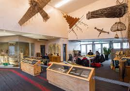

In 1967, the first intake to the National Carving School began the task
of learning the disciplines of their Māori ancestors. Among those
students was Clive Fugill, the man who would become master carver of
the institute today.
“I'll never forget that first day,” says Clive, “Our master carver,
Hone Taiapa, looked at us all and said, “you are here to learn the
art to pass it on to generations. Keep it alive for we could lose
our identity.” It was exciting to be playing such an important role
to save Māori art,” says Clive, “everyone has a reason in life.
This was my reason. And that's why I'm still here over 40 years
later. If we lose our arts and crafts we lose our identity.”

Harakeke (Flax) is unique to New Zealand and is one of our most ancient plant species.
When our ancestors arrived to New Zealand they quickly discovered
that flax could be woven to make clothing, housing materials and
decorative tūrapa (panels) for their houses.
Two native species of flax both come from the lily family. Harakeke
(common flax) grows up to three meters high and has firm, long
leaves with a fine muka fibre, ideal for all types of weaving.
Wharariki (mountain flax) is found along coast lines, growing up to
1.6 meters with softer leaves and less fibre than harakeke.
At the National Weaving school, students are taught the skills and
traditions of a craft hundreds of years old. “I believe weaving can
only be learnt the old way - by sitting, by listening, by touching
and by doing,” says head of the weaving school, Edna Pahewa.

Today fulltime carving students study for three years at the
national carving school, under the guidance of those, such as Clive
Fugill and James Rickard, master carvers at Te Puia who were once
institute carving students themselves.
Here at Te Puia we offer you the chance to take away traditional
Māori carvings; beautiful handcrafted pieces made at our National
Carving School. Look for the Te Puia Official Mark of Authenticity.
We also accept carving commissions.

Before Europeans and European weapons arrived in Aotearoa, Māori
warfare mainly involved hand-to-hand combat. Warriors used many
different hand weapons, including taiaha (fighting staffs),
pouwhenua (pointed staffs), tewhatewha (axe-like staffs), tao
(short spears), huata (long spears) and patu (clubs). The long
weapons were carried, and the small clubs were often tucked into a
belt. Special weapons were sometimes given names and passed down
through generations.
Wars could be fought over land and resources, but also as utu
(revenge) or to increase mana (prestige). There were many traditions
and rules to be followed during battles in earlier times. War
parties (taua) could range in size from a small group to a few
hundred people. Most battles took place in the summer months after
the harvesting of crops was completed. The element of surprise was
important, so raids often happened at dawn.